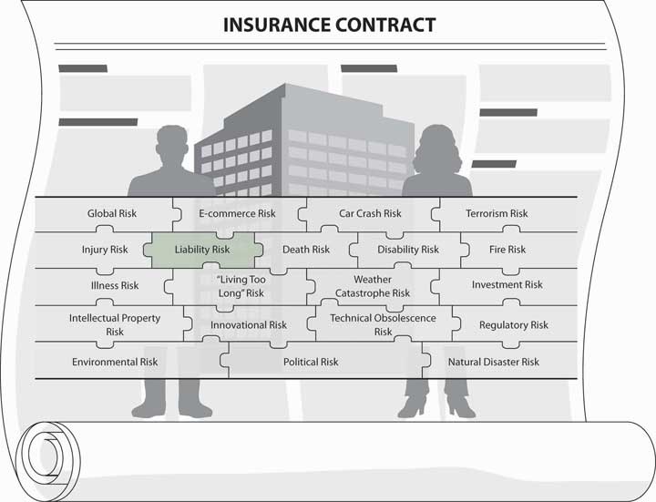
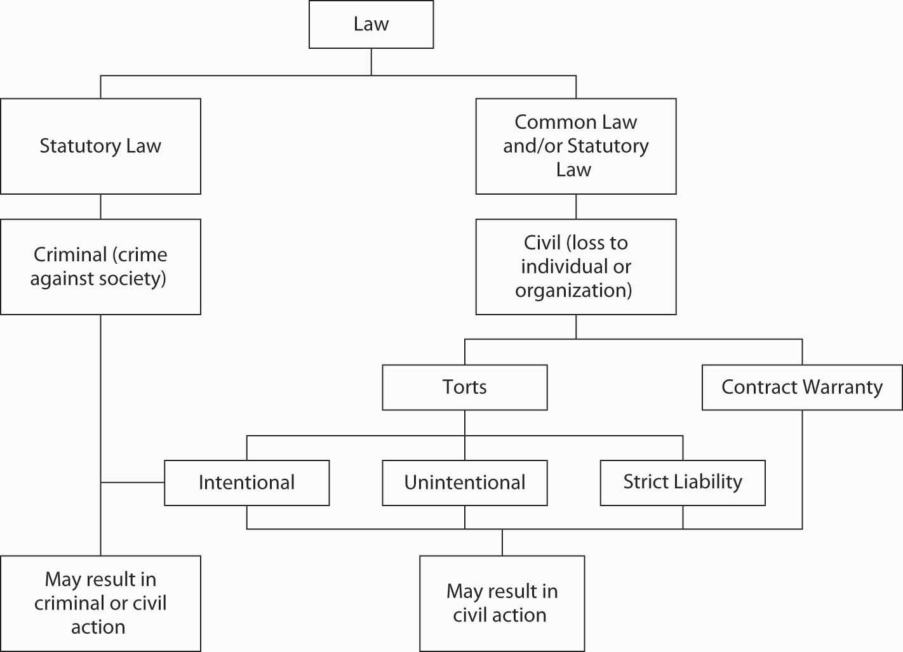

As noted in Chapter 11 "Property Risk Management", liability risk is the risk that we may hurt a third party and will be sued for bodily injury or other damages. Most of us have heard about auto liability; pollution liability; product liability; medical malpractice; and the professional liability of lawyers, accountants, company directors and officers, and more. In the early 2000s, the United States was mired in the accounting scandals of Enron and WorldCom. In the mid-2000s, AIG added its name to the list of lawsuits and criminal allegations with accounting improprieties that padded company results. Shareholders and participants in the 401(k) plans of these companies filed lawsuits, some of which were class-action suits. In February 2005, President Bush signed a bill to redirect class-action lawsuits in excess of $5 million and with geographically dispersed plaintiffs from state courts to federal courts.For class-action lawsuits, see major business and insurance journals during February 2005. Examples include Allison Bell, “Industry Welcomes Class-Action Victory,” National Underwriter Online News Service, February 10, 2005; Jim Drinkard, “Bush to Sign Bill on Class-Action Suits,” USA Today, February 18, 2005, http://www.usatoday.com/money/2005-02-17-lawsuits-usat_x.htm (accessed March 16, 2009). For AIG stories, see all media outlets in 2005, for example, “401(k) Participants File Class-Action Suit Against AIG,” BestWire, May 13, 2005. Also, review many articles in the media during the fall of 2008 and the winter of 2009. Cases of this type are expected to continue to emerge. In 2008, the credit crisis began and the allegations of misconduct and negligence by directors and officers are expected to bring about a large numbers of lawsuits.
While liability insurance is for unintentional actions, the fear of having to pay liability claims because of the errors and omissions of accountants and the directors and officers of companies have caused insurance rates in these types of coverage to jump dramatically. The relationships between behavior and coverage will be strongly demonstrated in this chapter, which will cover the following:
As discussed in the Links section in Chapter 11 "Property Risk Management", liability coverage is coverage for a third party that may suffer a loss because of your actions. It also covers you in case you are hurt or your property is damaged because of someone else’s actions, such as the actions of the accountants and executives of Enron, WorldCom, and AIG. The harmed parties are investors and the employees of these companies who lost all or part of their investments or pensions. In personal lines coverage, such as homeowners and auto policies, the liability of property damage or bodily injury you may inflict on others is covered up to a limit. In commercial lines, you may use a packaged multilines policy that also includes liability coverage. In this chapter, we focus only on the liability sections of these policies.
As part of your holistic risk management program, you now realize that you need a myriad of policies to cover all your liability exposures. In many cases, both the property and liability are in the same policies, but what liability coverage is actually included in each policy? As we delve further into insurance policies, we find many types of liability coverage. As you will see in this chapter, businesses have a vast number of liabilities: product, errors and omissions, professional, directors and officers, e-commerce, medical, employment, employee benefits, and more. The aftermath of September 11, 2001, revealed additional liabilities from terrorism. Liability risk exposure is scary for any individual or business, especially in such a litigious society as the United States. Nonetheless, it is important to have the recourse when someone has been wronged, for example, during the scandals of accounting irregularities and management fraud.
To better understand the complete holistic risk management process, it is imperative for us to understand all sections of the liability coverages in all the policies we hold. Figure 12.1 "Links between Liability Risks and Insurance Contracts" shows the connection among the types of coverage and the complete puzzle of risk. At this point we are drilling down into a massive type of risk exposure, which is covered by a myriad of policies. Our ability to connect them all allows us to complete the picture of our holistic risk.
Figure 12.1 Links between Liability Risks and Insurance Contracts
In this section we elaborate on the following:
Legal liabilityThe responsibility, based in law, to right some wrong done to another person or organization. is the responsibility, based in law, to right some wrong done to another person or organization. Several aspects of this definition deserve further discussion. One involves the remedy of liability. A remedyCompensation for a person who has been harmed in some way. is compensation for a person who has been harmed in some way. A person who has been wronged or harmed may ask the court to remedy or compensate him or her for the harm. Usually, this will involve monetary compensation, but it could also involve some behavior on the part of the person who committed the wrong, or the tortfeasorA person who commits a wrong.. For example, someone whose water supply has been contaminated by a polluting business may request an injunction against the business to force the cessation of pollution. A developer who is constructing a building in violation of code may be required to halt construction based on a liability lawsuit.
When monetary compensation is sought, it can take one of several forms. Special damagesCompensation for harms that generally are easily quantifiable into dollar measures. (or economic damages) compensate for those harms that generally are easily quantifiable into dollar measures. These include medical expenses, lost income, and repair costs of damaged property. Those harms that are not specifically quantifiable but that require compensation all the same are called general damagesCompensation for harms that are not specifically quantifiable but that require compensation all the same. (or noneconomic damagesCompensation for harms that are not specifically quantifiable but that require compensation all the same.). Examples of noneconomic or general damages include pain and suffering, mental anguish, and loss of consortium (companionship). The third type of monetary liability award is punitive damages, which was discussed in Note 10.25 "Are Punitive Damages out of Control?" in Chapter 10 "Structure and Analysis of Insurance Contracts". In this chapter, we will continue to discuss the controversy surrounding the use of punitive damages. Punitive damagesAwards intended to punish an offender for exceptionally undesirable behavior. are considered awards intended to punish an offender for exceptionally undesirable behavior. Punitive damages are intended not to compensate for actual harm incurred but rather to punish.
A second important aspect of the definition of liability is that it is based in law. In this way, liability differs from other exposures because it is purely a creation of societal rules (laws), which reflect social norms. As a result, liability exposures differ across societies (nations) over time. In the United States, liability is determined by the courts and by laws enacted by legislatures.
The risk of liability is twofold. Not only may you become liable to someone else and suffer loss, but someone else may become liable to you and have to pay you. You need to know about both sides of the coin, so to speak. Your financial well-being or that of your organization can be adversely affected by your responsibility to others or by your failure to understand their responsibility to you. If you are the party harmed, you would be the plaintiffThe party harmed in litigation. in litigation. The party being sued in litigation is the defendantThe party being sued in litigation.. In some circumstances the parties will be both plaintiffs and defendants.
The liability exposure may arise out of either statutory or common law, as shown in Figure 12.2 "Basis of Liability Risk". Statutory lawThe body of written law created by legislatures. is the body of written law created by legislatures. Common lawBody of law based on custom and court decisions., on the other hand, is based on custom and court decisions. In evolving common law, the courts are guided by the doctrine of stare decisis (Latin for “to stand by the decisions”). Under the doctrine of stare decisisPrinciple that once a court decision is made in a case with a given set of facts, the courts tend to adhere to the principle thus established and apply it to future cases involving similar facts., once a court decision is made in a case with a given set of facts, the courts tend to adhere to the principle thus established and apply it to future cases involving similar facts. This practice provides enough continuity of decision making that many disputes can be settled out of court by referring to previous decisions. Some people believe that in recent years, as new forms of liability have emerged, continuity has not been as prevalent as in the past.
Figure 12.2 Basis of Liability Risk
As illustrated in Figure 12.2 "Basis of Liability Risk", the field of law includes criminal law and civil law. Criminal lawLaw concerned with acts that are contrary to public policy (crimes), such as murder or burglary. is concerned with acts that are contrary to public policy (crimes), such as murder or burglary. Civil lawLaw that deals with acts that are not against society as a whole but rather cause injury or loss to an individual or organization., in contrast, deals with acts that are not against society as a whole, but rather cause injury or loss to an individual or organization, such as carelessly running a car into the side of a building. A civil wrong may also be a crime. Murder, for instance, attacks both society and individuals. Civil law has two branches: one concerned with the law of contracts and the other with the law of torts (explained in the next paragraph). Civil liability may stem from either contracts or torts.
Contractual liabilityWhen the terms of a contract are not carried out as promised by either party to the contract. occurs when the terms of a contract are not carried out as promised by either party to the contract. When you sign a rental agreement for tools, for example, the agreement may provide that the tools will be returned to the owner in good condition, ordinary wear and tear excepted. If they are stolen or damaged, you are liable for the loss. As another example, if you offer your car for sale and assure the buyer that it is in perfect condition, you have made a warranty. A warrantyA guarantee that property or service sold is of the condition represented by the seller. is a guarantee that property or service sold is of the condition represented by the seller. If the car is not in perfect condition, you may be liable for damages because of a breach of warranty. This is why some sellers offer goods for sale on an “as is” basis; they want to be sure there is no warranty.
A tortA private or civil wrong or injury, other than breach of contract, for which the court will provide a remedy in the form of an action for damages. is “a private or civil wrong or injury, other than breach of contract, for which the court will provide a remedy in the form of an action for damages.”H. J. Black, Black’s Law Dictionary, 5th ed. (St. Paul, MI: West Publishing Company, 1983), 774. That is, all civil wrongs, except breach of contract, are torts. A tort may be intentional if it is committed for the purpose of injuring another person or the person’s property, or it may be unintentional. Examples of intentional torts include libel, slander, assault, and battery, as you will see in the contracts provided as appendixes at the end of this book. While a risk manager may have occasion to be concerned about liability arising from intentional torts, the more frequent source of liability is the unintentional tort. By definition, unintentional torts involve negligence.
If someone suffers bodily injury or property damage as a result of your negligence, you may be liable for damages. Negligence refers to conduct or behavior. It may be a matter of doing something you should not do, or failing to do something you should do. NegligenceFailure to act reasonably, where such failure to act causes harm to others. can be defined as a failure to act reasonably, and that failure to act causes harm to others. It is determined by proving the existence of four elements (sometimes people use three, combining the last two into one). These four elements are the following:
An example may be helpful. When a person operates an automobile, that person has a duty to obey traffic rules and to drive appropriately for the given conditions. A person who drives while drunk, passes in a no passing zone, or drives too fast on an icy road (even if within set speed limits) has breached the duty to drive safely. If that person completes the journey without an incident, no negligence exists because no harm occurred. If, however, the driver causes an accident in which property damage or bodily injury results, all elements of negligence exist, and legal liability for the resulting harm likely will be placed on the driver.
A difficult aspect of proving negligence is showing that a breach of duty has occurred. Proof requires showing that a reasonable and prudent person would have acted otherwise. Courts use a variety of methods to assess reasonableness. One is a cost-benefit approach, which holds behavior to be unreasonable if the discounted value of the harm is more than the cost to avoid the harmThis was first stated explicitly by Judge Learned Hand in U.S. v. Carroll Towing Co., 159 F. 2d 169 (1947).—that is, if the present value of the possible loss is greater than the expense required to avoid the loss. In this way, courts use an efficiency argument to determine the appropriateness of behavior.
A second difficult aspect of proving negligence is to show a proximate cause between the breach of duty and resulting harm. Proximate cause has been referred to as an unbroken chain of events between the behavior and harm. The intent is to find the relevant cause through assessing liability. The law is written to encourage behavior with consideration of its consequences.
Liability will not be found in all the circumstances just described. The defendant has available a number of defenses, and the burden of proof may be modified under certain situations.
A number of defenses against negligence exist, with varying degrees of acceptance. A list of defenses is shown in Table 12.1 " Defenses against Liability". One is assumption of risk. The doctrine of assumption of riskDoctrine that holds that if the plaintiff knew of the dangers involved in the act that resulted in harm, but chose to act in that fashion nonetheless, the defendant will not be held liable. holds that if the plaintiff knew of the dangers involved in the act that resulted in harm but chose to act in that fashion nonetheless, the defendant will not be held liable. An example would be a bungee cord jumper who is injured from the jump. One could argue that a reasonable person would know that such a jump is very dangerous. If applicable, the assumption of risk defense bars the plaintiff from a successful negligence suit. The doctrine was particularly important in the nineteenth century for lawsuits involving workplace injuries, where employers would defend against liability by claiming that workers knew of job dangers. With workers’ compensation statutes in place today, the use of assumption of risk in this way is of little importance, as you will see in Chapter 1 "The Nature of Risk: Losses and Opportunities". Many states have also abolished the assumption of risk doctrine in automobile liability cases, disallowing the defense that a passenger assumed the risk of loss if the driver was known to be dangerous or the car unsafe.
Table 12.1 Defenses against Liability
|
A second defense found in just a few states is the doctrine of contributory negligenceSituation that disallows any recovery by the plaintiff if the plaintiff is shown to be negligent to any degree in not avoiding the relevant harm., which disallows any recovery by the plaintiff if the plaintiff is shown to be negligent to any degree in not avoiding the relevant harm. Thus, the motorist who was only slightly at fault in causing an accident may recover nothing from the motorist who was primarily at fault. In practice, a judge or jury is unlikely to find a plaintiff slightly at fault where contributory negligence applies. Theoretically, however, the outcome is possible.
The trend today is a shift away from the use of contributory negligence. Instead, most states follow the doctrine of comparative negligence. In comparative negligenceSituation in which the court compares the relative negligence of the parties and apportions recovery on that basis., the court compares the relative negligence of the parties and apportions recovery on that basis. At least two applications of the comparative negligence rule may be administered by the courts. Assume that, in the automobile example, both motorists experienced damages of $100,000, and that one motorist was 1 percent at fault, the other 99 percent at fault. Under the partial comparative negligenceRule under which only the individual less than 50 percent at fault in causing harm receives compensation. rule, only the individual less than 50 percent at fault in causing harm receives compensation. The compensation equals the damages multiplied by the percentage not at fault, or $99,000 ($100,000 × .99) in our example. Under the complete comparative negligenceRule under which both parties share damage in relation to their levels of responsibility for fault. rule, damages are shared by both parties in relation to their levels of responsibility for fault. The motorist who was 1 percent at fault still receives $99,000, but must pay the other motorist $1,000 ($100,000 × .01), resulting in a net compensation of $98,000. Because few instances exist when a party is completely free of negligence, and because society appears to prefer that injured parties be compensated, comparative negligence has won favor over contributory negligence. An important question, though, is how the relative degrees of fault are determined. Generally, a jury is asked to make such an estimate based on the testimony of various experts. Examples of the application of contributory and comparative negligence are shown in Table 12.2 " Contributory and Comparative Negligence".
Table 12.2 Contributory and Comparative Negligence
| Assume that two drivers are involved in an automobile accident. Their respective losses and degrees of fault are as follows: | ||
| Losses ($) | Degree of Fault | |
| Dan | 16,000 | .60 |
| Kim | 22,000 | .40 |
| Their compensation would be determined as follows: | |||
| Contributory | Partial Comparative* | Complete Comparative** | |
| Dan | 0 | 0 | 7,200 |
| Kim | 0 | 13,200 | 13,200 |
| * Only when party is less at fault than the other is compensation available. Here Dan’s fault exceeds Kim’s. | |||
|---|---|---|---|
| ** Complete comparative negligence forces an offset of payment. Kim would receive $6,000 from Dan ($13,200 ± 7,200). | |||
Last clear chance is a further defense to liability. Under the last clear chanceDoctrine under which a plaintiff who assumed the risk or contributed to an accident through negligence is not barred from recovery if the defendant had the opportunity to avoid the accident but failed to do so. doctrine, a plaintiff who assumed the risk or contributed to an accident through negligence is not barred from recovery if the defendant had the opportunity to avoid the accident but failed to do so. For instance, the motorist who could have avoided hitting a jaywalker but did not had the last clear chance to prevent the accident. The driver in this circumstance could not limit liability by claiming negligence on the part of the plaintiff. Today, the doctrine has only minor application. It may be used, however, when the defendant employs the defense of contributory negligence against the plaintiff.
Last in this list of defenses is immunity. Where immunityA complete defense against liability because of status as a protected entity, professional, or other party. applies, the defendant has a complete defense against liability merely because of status as a protected entity, professional, or other party. For example, governmental entities in the United States were long protected under the doctrine of sovereign immunity. Sovereign immunity held that governments could do no wrong and therefore could not be held liable. That doctrine has lost strength in most states, but it still exists to some degree in certain circumstances. Other immunities extend to charitable organizations and family members. Like sovereign immunity, these too have lost most of their shield against liability.
Doctrines of defense are used to prevent a successful negligence (and sometimes strict liability) lawsuit. Other legal doctrines modify the law to assist the plaintiff in a lawsuit. Some of these are discussed here and are listed in Table 12.3 " Modifications of Negligence".
Table 12.3 Modifications of Negligence
|
Rules of negligence hold that an injured person has the burden of proof; that is, he or she must prove the defendant’s negligence in order to receive compensation. Courts adhere to these rules unless reasons exist to modify them. In some situations, for example, the plaintiff cannot possibly prove negligence. The court may then apply the doctrine of res ipsa loquiturDoctrine that shifts the burden of proof to the defendant. (“the thing speaks for itself”), which shifts the burden of proof to the defendant. The defendant must prove innocence. The doctrine may be used upon proof that the situation causing injury was in the defendant’s exclusive control, and that the accident was one that ordinarily would not happen in the absence of negligence. Thus, the event “speaks for itself.”
Illustrations of appropriate uses of res ipsa loquitur may be taken from medical or dental treatment. Consider the plaintiff who visited a dentist for the extraction of wisdom teeth and was given a general anesthetic for the operation. Any negligence that may have occurred during the extraction could not be proved by the plaintiff, who could not possibly have observed the negligent act. If, upon waking, the plaintiff has a broken jaw, res ipsa loquitur might be employed.
Doctrines with similar purposes to res ipsa loquitur may be available when a particular defendant cannot be identified. Someone may be able to prove by a preponderance of evidence, for example, that a certain drug caused an adverse reaction, but that person may be unable to prove which company manufactured the particular bottle consumed. Courts may shift the burden of proof to the defendants in such a circumstance.Two such theories are called enterprise liability and market share liability. Both rely on the plaintiff’s inability to prove which of several possible companies manufactured the particular product causing injury when each company makes the same type of product. Under either theory, the plaintiff may successfully sue a “substantial” share of the market without proving that any one of the defendants manufactured the actual product that caused the harm for which compensation is sought.
Liability may also be strict (or, less often, absolute) rather than based on negligence. That is, if you have property or engage in an activity that is considered ultra-dangerous to others, you may become liable on the basis of strict liabilityLiability without regard to fault. without regard to fault. In some states, for example, the law holds owners or operators of aircraft liable with respect to damage caused to persons or property on the ground, regardless of the reasonableness of the owner’s or operator’s actions. Similarly, if you dam a creek on your property to build a lake, you will be liable in most situations for injury or damage caused if the dam collapses and floods the area below. In product liability, discussed later in this chapter, a manufacturer may be liable for harm caused by use of its product, even if the manufacturer was reasonable in producing it. Thus, the manufacturer is strictly liable.
In some jurisdictions, the owner of a dangerous animal is liable by statute for any harm or damage caused by the animal. Such liability is a matter of law. If you own a pet lion, you may become liable for damages regardless of how careful you are. Similarly, the responsibility your employer has in the event you are injured or contract an occupational disease is based on the principle of liability without fault.Workers’ compensation is discussed in Chapter 1 "The Nature of Risk: Losses and Opportunities". Both situations involve strict liability.
In addition, liability may be vicarious. That is, the vicarious liabilitySituation in which the liability of one person may be based on the tort of another. of one person may be based on the tort of another, particularly in an agency relationship. An employer, for example, may be liable for damages caused by the negligence of an employee who is on duty. Such an agency relationship may result in vicarious liability for the principal (employer) if the agent (employee) commits a tort while acting as an agent. The principal need not be negligent to be liable under vicarious liability. The employee who negligently fails to warn the public of slippery floors while waxing them, for instance, may cause his or her employer to be liable to anyone injured by falling. Vicarious liability will not, however, shield the wrongdoer from liability. It merely adds a second potentially liable party. The employer and employee in this case may both be liable. Recall the case of vanishing premiums described in Chapter 9 "Fundamental Doctrines Affecting Insurance Contracts". Insurers were found to have liability because of the actions of their agents.
A controversial modification to negligence is the use of the joint and several liability doctrine. Joint and several liabilitySituation that exists when a plaintiff is permitted to sue any of several defendants individually for the full harm incurred. exists when the plaintiff is permitted to sue any of several defendants individually for the full harm incurred. Alternatively, the plaintiff may sue all or a portion of the group together. Under this application, a defendant may be only slightly at fault for the occurrence of the harm, but totally responsible for paying for it. The classic example comes from a case in which a Disney World patron was injured on a bumper car ride.Walt Disney World Co. v. Wood, 489 So. 2d 61 (Fla. 4th Dist. Ct. Appl. 1986), upheld by the Florida Supreme Court (515 So. 2d 198, 1987). The plaintiff was found 14 percent contributory at fault; another park patron was found 85 percent at fault; Disney was found 1 percent at fault. Because of the use of the joint and several liability doctrine, Disney was required to pay 86 percent of the damages (the percentage that the plaintiff was not at fault). Note that this case is an exceptional use of joint and several liability, not the common use of the doctrine.
In this section you studied the general notion of liability and the related legal aspects thereof:
In this section we elaborate on the following:
Individuals, families, firms, and other organizations are exposed to countless sources of liability. These may be related to the property they own or control, or to their activities (including using an automobile, providing professional services, manufacturing products, or being involved in e-commerce).
You have a duty to the public not only with regard to your activities but also in connection with real and personal property you own or for which you are responsible. The duty—the degree of care—varies with the circumstances. The owner or tenant of premises, for example, does not owe the same duty to each person who enters the property. The highest degree of care is owed to invitees, whereas the standard of care is less for licensees and lowest for trespassers.
A trespasserA person who enters the premises of another without either express or implied permission from a person with the right to give such permission. is a person who enters the premises of another without either express or implied permission from a person with the right to give such permission. Generally, the only duty owed to a trespasser is to refrain from taking steps to harm him or her. There are several exceptions to this, the most important concerning trespassing children. This exception is discussed in connection with the doctrine of attractive nuisance.
A licenseeA person who enters premises with permission but (1) not for the benefit of the person in possession, or (2) without a reasonable expectation that the premises have been made safe. is a person who enters premises with permission but (1) not for the benefit of the person in possession, or (2) without a reasonable expectation that the premises have been made safe. If your automobile breaks down and you ask the owners of the nearest house to use their telephone, the permission you receive to enter the house makes you a licensee. Because a licensee is the party who receives the benefit of entering the property, he or she is entitled to a minimum degree of care by the owner or tenant. An owner or tenant must avoid harm to licensees and must warn licensees of any dangerous activity or condition of the property. They need not make the place safer, however, than it is normally.
An inviteeA person who enters the premises with permission and for the benefit of the person in possession. is a person who enters the premises with permission and for the benefit of the person in possession. The invitee is entitled to a higher degree of care than a licensee. Thus, a customer in a store is an invitee, whether or not he or she makes a purchase. The property owner is expected to maintain safe premises for invitees and to warn of dangers that cannot be corrected.
For the most part, it is a person’s reasonable expectation that determines his or her status. If you reasonably expect that the premises have been made safe for you, you are an invitee. For example, if I invite you to a party at my home, you are an invitee. If you should reasonably expect to accept the premises as is without special effort on the part of the possessor, then you are a licensee. The distinction between a licensee and an invitee is not always clear because it depends on reasonable expectations. Further, the courts have tended in recent years to place little weight on these distinctions. The question becomes, What is reasonable of the property owner? Generally, the owner has the responsibility to provide a reasonably safe environment.
In one case, a guest who fell on a slippery floor was awarded damages against the homeowner. In another case, a visitor fell down steps that were not properly lighted because a worker had failed to turn on a light. Although it was the worker who was negligent, the homeowner had to pay because the worker was his representative. Thus, the property owner’s liability was vicarious; he was not negligent, but his employee was. In another case, a homeowner repaired a canopy and then hired a painter. When the painter crawled onto the canopy, the canopy collapsed. The homeowner was held liable for the injuries sustained.
If you are a tenant, you cannot assume that the owner alone will be liable for defects in the premises. In many cases, the injured party will sue both the owner and the tenant. Furthermore, the owner may shift responsibility to the tenant by means of a hold-harmless clause in the lease. A hold-harmless agreementA contractual provision that transfers financial responsibility for liability from one party to another. is a contractual provision that transfers financial responsibility for liability from one party to another. This is particularly important to understand because many tenants who sign a lease do not realize they are assuming such liability by contract. A typical clause is as follows:
…That the lessor shall not be liable for any damage, either to person or property, sustained by the lessee or by any other person, due to the building or any part thereof, or any appurtenances thereof, becoming out of repair, or due to the happening of any accident in or about said building, or due to any act or neglect of any tenant or occupant of said building, or of any other person.
The gist of this clause is to transfer the financial aspects of the landlord’s potential liability to the tenant.
If your negligence results in damage to premises you lease, you may be liable to the owner. The fact that the owner has insurance to cover the damage does not mean you will not be required to pay for the loss. After the insurer pays the owner, the insurer receives subrogation of the owner’s right to recover damages, meaning that the insurer is given legal recourse against you for any liability you may have to the owner.
Ownership of pets and other animals may also result in liability. Anyone owning an animal generally is responsible for damage or injury that the animal may cause. In many jurisdictions, if the owner acted reasonably in controlling the animal, no liability will result. For example, in many places, a pet dog that has been friendly and tame need not be leashed. Once that dog has bitten someone, however, more control is required. If the dog bites a second person, the owner is likely to be held liable for the harm. In this case, the owner had forewarning.
Likewise, anyone owning dangerous animals such as lions or poisonous snakes is held to a higher standard of care. In this case, strict liability may be applied. Knowledge of the potential danger already exists; thus, the owner must be given strong incentives to prevent harm.
In a recent, highly visible California case, a thirty-three-year-old woman was mauled to death by a 123-pound English mastiff/Presa Canary Island crossbreed. The owners were found guilty of second degree murder by the jury, but the judge, in a surprise move, changed the ruling.Coverage of the story is available in all media stories in the beginning of June 2002. This case illuminates statistics from the Center for Disease Control and Prevention in Atlanta, which reports ten to twenty deaths annually from dog bites. Lawmakers in various states enacted laws concerning dogs. The insurance industry also reacted to curtail the losses caused by dogs. In the Insurance Services Office (ISO) homeowners policy (see Chapter 24 "Appendix A" in this textbook) there are “special provisions that excludes liability coverage for any insured for bodily injury arising out of the actions of a dangerous or vicious, and out of the insureds failure to keep the dangerous dog leashed or tethered or confined in a locked pen with a top or locked fenced yard. The owners are required to control the dogs and assure the safety of passersby.”Diane Richardson, “Bite Claims Can Dog Insurance Companies,” National Underwriter, Property & Casualty/Risk & Benefits Management Edition, May 14, 2001; Daniel Hays, “Insurers Feel the Bite of Policyholders’ Big Bad Dogs,” National Underwriter Online News Service, January 31, 2001.
In some cases, small children are attracted by dangerous objects or property. In such circumstances, the owner has a special duty toward the children, especially if they are too young to be responsible for their own safety. This is called the doctrine of attractive nuisance. An attractive nuisanceAnything that is (1) artificial, (2) attractive to small children, and (3) potentially harmful. is anything that is (1) artificial, (2) attractive to small children, and (3) potentially harmful. People who own power lawn mowers, for example, must be especially watchful for small children who may be injured through their own curiosity. If you leave your mower running while you go in the house to answer the telephone and there are small children in the neighborhood who may be attracted to the mower, you may be held financially responsible for any harm they experience. The most common attractive nuisance is the swimming pool. Although some courts have held that those who own swimming pools are not necessarily babysitters for the community, it appears that pool owners do have the duty of keeping children out. There have been many cases in which children entered a neighbor’s pool without permission and drowned. The result is a suit for damages and in many cases a verdict in favor of the plaintiff.
An increasingly important area of potential liability involving property derives from the possibility that land may be polluted, requiring cleanup and/or compensation to parties injured by the pollution. Because of significant legislation passed in the 1970s and 1980s, the cleanup issue may be of greater concern today than previously.
In 1980, the U.S. Congress passed the Comprehensive Environmental Response, Compensation, and Liability Act (known as either CERCLA or Superfund). This act places extensive responsibilities on organizations involved in the generation, transportation, storage, and disposal of hazardous waste. Responsibility generally involves cleaning or paying to clean polluted sites that are dangerous to the public. Estimates of total program costs run from $100 billion to $1 trillion, giving an indication of the potential severity of liability judgments. Any purchaser of realty (or creditor for that purchase) must be aware of these laws and take steps to minimize involvement in Superfund actions. A small amendment to the law was signed by President George W. Bush on January 11, 2002. Under the Small Business Liability Relief and Brownfields Revitalization Act, certain small contributors to Superfund sites were taken out of the liability system. The new law creates incentives for developers to purchase and restore abandoned urban sites known as brownfields.Steven Brostoff, “New Brownfields Law Falls Short of Sought-After Superfund Reforms,” National Underwriter Property & Casualty/Risk & Benefits Management Edition, March 25, 2002.
The area of pollution liability is very complex. Decisions have been made regularly in pollution cases. In a pollution case that went to the Ohio Supreme Court, Goodyear Tire & Rubber Co. sought to recover the cost of environmental cleanups at some of its sites from its insurers.Rodd Zolkos, “Ohio High Court Favors Policyholder in Pollution Case,” Business Insurance, June 27, 2002. The insurers claimed that the coverage was excluded under the pollution exclusions provisions. The court sided with Goodyear, however, ordering that Goodyear be allowed to choose—from the pool of triggered policies—a single primary policy against which to make a claim.
People also may be liable for damages caused by their own actions or those of someone else. In negligence suits, you will be judged on how a “reasonable” person in the same or similar circumstances with your training and ability would have acted. You will be judged according to different criteria for nonnegligence suits.
Ownership and operation of an automobile is probably the most common source of liability any individual will encounter. Details about this liability will be given in Chapter 1 "The Nature of Risk: Losses and Opportunities".
As the driver of an automobile, you are responsible for its careful and safe operation. If you do not operate it in a reasonable and prudent fashion and someone is injured as a result of such lack of care, you may be held liable for damages. If, for example, you carelessly drive through a stop sign and run into another car, you may be liable for the damage done.
Through either direct or vicarious liability, the owner of an automobile may be responsible for the damage it causes when driven by another person. In some states, the family purpose doctrineDoctrine that makes the owner of a family car responsible for whatever damage it does, regardless of which member of the family may be operating the car at the time of the accident. makes the owner of the family car responsible for whatever damage it does, regardless of which member of the family may be operating the car at the time of the accident. The theory is that the vehicle is being used for a family purpose, and the owner, as head of the family, is therefore responsible.
Many parents assume responsibility for their children’s automobile accidents without realizing they are doing so. In some states, minors between the ages of sixteen and eighteen are issued driver’s licenses only if their applications are signed by a parent or guardian. What many parents do not realize is that by signing the application, they may assume responsibility for damage arising from the child’s driving any automobile. Ordinarily, a child is responsible for his or her own torts, but the parent may become liable by contract.
Vicarious liability is possible in other settings as well. If you lend your car to a friend, Sid Smith, so he can go buy a case of liquor for a party you are having, he will be your agent during the trip and you may be held responsible if he is involved in an accident. Your liability in this case is vicarious; you are responsible for Smith’s negligence. On the other hand, if Smith is not a competent driver, you may be held directly liable for putting a dangerous instrument in his hands. In such a case, it is your own negligence for which you are responsible.
A special problem for employers is the risk known as nonownership liabilitySituation in which an employer is held liable for an injury caused by an employee using his or her own property when acting on the employer’s behalf., in which an employer is held liable for an injury caused by an employee using his or her own property when acting on the employer’s behalf. If an employee offers to drop the mail at the post office as he or she drives home from work, the firm may be held liable if the employee is involved in an accident in the process. This possibility is easily overlooked because the employer may not be aware that employees are using their cars for company business.
Members of a profession claim to have met high standards of education and training, as well as of character and ethical conduct. They are expected to keep up with developments in their field and maintain the standards established for the profession. As a result, the duty a professional owes to the public is considerably greater than that owed by others. Along with this duty, of course, comes liability for damage caused by failure to fulfill it. People expect more from a professional, and when they do not get it, some sue for damages.
As noted above, improper accounting activities to fatten the bottom line by publicly traded firms is becoming an all-too-prevalent headline in the news. With fraud rampant, it appears that this chapter will not be closed for a long time. The lack of trust of investors, small or large, in the accounting profession and corporate leadership in the United States led to the creation of the Sarbanes-Oxley Act of 2002, as discussed in Chapter 8 "Insurance Markets and Regulation". The failures of the dot.com companies brought about an “onslaught of securities litigation, increasing claims for directors, officers and accountants’ professional liability insurers.”Mark E. Ruquet, “Accountants Under Scrutiny Even Before Enron Failure,” National Underwriter, Property & Casualty/Risk & Benefits Management Edition, February 25, 2002.
Professionals’ mistakes can result in professional liability claims. The insurance protection for this risk is errors and omissions (E&O) liability coverageInsurance protection for mistakes made by professionals that result in professional liability claims.. In light of the Enron/Arthur Anderson debacle and the WorldCom fraud, it is no wonder that the price for E&O has skyrocketed.Mark E. Ruquet, “Accountants Paying More for E&O Coverage,” National Underwriter, Property & Casualty/Risk & Benefits Management Edition, February 25, 2002.
The outcome of all these accounting irregularities and the pure fraud that was alleged also has caused the rates of directors and officers (D&O) liability coverage to soar.The citations are too many to list because the issues develop daily. Review information in National Underwriter, Best’s Review, and Business Insurance to learn more. Some parts of these Web sites are open only to subscribers, so students are encouraged to use their library’s subscriptions to search these publications. Headlines such as “Insurers Likely to Balk at WorldCom D&O Coverage,”Best Wire, July 1, 2002. “Lawsuits Send D&O Premiums Soaring,”National Underwriter Online News Service, June 17, 2002. and “D&O Mkt. Could Face Catastrophic Year”Lisa S. Howard, National Underwriter, Property & Casualty/Risk & Benefits Management Edition, February 25, 2002. were just some examples of the reflection of the accounting, telecom, and Enron scandals.
In 2005, with added allegations against AIG, there was increased regulatory scrutiny of corporate activities, and insurers became more selective in their underwriting. BestWire reported in 2005 that “typically, D&O insurers offer three types of coverage: The first is coverage provided directly to directors and officers who aren’t indemnified by their companies; the second is coverage to companies for settlements, judgments and defense costs; and the third is coverage for securities-related claims made directly against companies.”“D&O Coverage Evolve in Unstable Regulatory Climate,” BestWire, May 23, 2005, http://www3.ambest.com/Frames/FrameServer.asp?AltSrc= 23&Tab=1&Site=news&refnum=74599 (accessed March 16, 2009). This article and those in footnotes 14 to 16 are a few examples. During the early to mid-2000s, the student can find related stories in every media outlet. AIG has been one of the largest providers of D&O coverage. In 2005, it tested its coverage on its own directors and officers.Dave Lenckus, “AIG Set to Test Its Own Cover,” Business Insurance, May 16, 2005, http://www.businessinsurance.com/cgi-bin/article.pl?articleId= 16843&a=a&bt=AIG+Set+to+Test+Its+Own+Cover (accessed March 16, 2009). As described in earlier chapters, AIG’s stock price was hurt because of irregularities in the way the insurer accounted for the sale of finite risk and other loss mitigation products. These actions also led to class-action lawsuitsLawsuits filed on behalf of many plaintiffs. (lawsuits filed on behalf of many plaintiffs) from the employees who invested in their company through their 401(k) accounts (discussed in Chapter 2 "Risk Measurement and Metrics").Michael Ha, “AIG Center of Class-Action Lawsuit,” National Underwriter Online News Service, May 13, 2005, http://www.propertyandcasualtyinsurancenews.com/cms/NUPC/Weekly %20Issues/Issues/2005/20/News/P20AIGUPDATE?searchfor= (accessed March 16, 2009).
The risks to which physicians and surgeons are exposed illustrate the position of a professional. In taking cases, doctors represent that they possess—and the law imposes upon them the duty of possessing—the degree of learning and skill ordinarily possessed by others in their profession. If medical doctors fail to use reasonable care and diligence, and they fail to use their best judgment in exercising their skill and applying their knowledge, they are guilty of malpracticeFailure by a professional to use reasonable care and diligence, and/or failure to use one’s best judgment in exercising skill and applying knowledge..
Two cases demonstrate the risk to which medical doctors are exposed. A plastic surgeon who made his patient look worse instead of better had to pay $115,000 for the damage. A court awarded $4.5 million to a girl suffering acute kidney failure as a result of malpractice.
Unlike the days when a family had one doctor who took care of almost all health problems, the modern health care system is specialized; many patients are dealing primarily with doctors they do not know. Faith in, and friendship with, the family doctor has been displaced by impersonal, brief contact with a specialist who may be more efficient than friendly. Furthermore, publicity about fraud by some doctors under the Medicare and Medicaid programs and about the amount of unneeded medical procedures (often performed as a defense against lawsuits) has reduced the prestige of the medical profession. As a result, there has been a decrease in confidence and an increase in willingness to sue.
Some of the increase in lawsuits, however, has been caused by a combination of unrealistic expectations based on news about modern medical miracles and the belief by some that people are entitled to perfect care. When they do not get it, they feel entitled to compensation.
One result of the surge in medical malpractice suits has been a scarcity of professional liability insurance in the private market and a dramatic increase in the cost of protection for both doctors and hospitals. These costs, of course, are passed along by most doctors to the consumer. They represent one factor contributing to rising health care costs.
Another result is the rise of defensive medicine. Doctors and hospitals are guided not only by what is good for the patient but also by their own interests in preventing liability losses. The latter, of course, leads to practices that may not be medically necessary and that increase the size of the patient’s bill. The total effect of defensive medicine on the cost of health care is difficult to determine, but it is likely significant.
Medical malpractice lawsuits continued to soar into the new millennium and the availability of coverage became scarce in many states. Unable to find liability coverage, many doctors in risky specialties such as obstetrics and neurosurgery simply left the business. Medical liability rates nearly doubled in some areas, and insurers left many states. In 2005, rates continued to climb but at a slower rate.Steven Brostoff, “Malpractice Cover Worries Docs: AHA,” National Underwriter Online News Service, June 26, 2002; Daniel Hays, “Another Malpractice Insurer Leaving Florida,” National Underwriter Online News Service, June 24, 2002; “Study: Tort Costs Still Edging Up, Albeit More Slowly,” National Underwriter Online News Service, January 17, 2005, http://www.propertyandcasualtyinsurancenews.com/cms/NUPC/Breaking %20News/2005/01/17-Study%20Tort%20Costs%20Still%20 Edging%20Up%20Albeit%20More%20Slowly?searchfor=tort%20costs%20edging%20up (accessed March 16, 2009). Some published studies in 2004 and 2005 concluded that lawsuits against doctors were not necessarily the cause of med-mal rate increases.Rachel Zimmerman and Christopher Oster, “Insurers’ Price Wars Contributed to Doctors Facing Soaring Costs; Lawsuits Alone Didn’t Inflate Malpractice Premiums,” Wall Street Journal, June 24, 2002; “Report: Suits Don’t Cause Higher Med Mal Premiums,” National Underwriter Online News Service, March 11, 2004, http://www.propertyandcasualtyinsurancenews.com/cms/NUPC/Breaking%20 News/2005/03/11-Report%20Suits%20Dont%20Cause%20Higher%20Med%20 Mal%20Premiums?searchfor=suits%20cause%20higher%20premiums (accessed March 16, 2009).; Arthur D. Postal, “More Conflict over What Raises Med-Mal Rates,” National Underwriter Online News Service, May 23, 2005, http://www.propertyandcasualtyinsurancenews.com/cms/NUPC/Breaking %20News/2005/05/23-TORT-dp?searchfor=conflict%20raises%20rates (accessed March 16, 2009). For more details, see the box, Note 12.58 "The Medical Malpractice Crisis" later in this chapter.
Many firms are exposed to liability from their operations. Contractors are particularly susceptible to operations liabilityLiability arising from the ownership, maintenance, and use of premises and conduct of activity., or liability arising from the ownership, maintenance, and use of premises and conduct of activity. Because they perform most of their work away from their premises, contractors’ greatest liability exposure is on the job rather than arising from their own premises. Bystanders may be injured by equipment, excavations may damage the foundation of adjacent buildings, blasting operations may damage nearby property or injure someone. If harm is caused while performing the job, as opposed to a negligently completed job, the liability may be an operations one.
As was discussed in detail in Chapter 11 "Property Risk Management", e-commerce poses not only property and interruption of business risks but also third-party liability arising from the following:George Sutcliffe, E-Commerce and Insurance Risk Management (Boston: Standard Publishing Corp., 2001); 2004 CSI/FBI Computer Crime and Security Survey at GoCSI.com.
Online privacy issues continue to top headlines. According to the respondents of a survey conducted by the Yankee Group, a consulting firm focusing on global e-commerce and wireless markets, 83 percent of online consumers are somewhat or very concerned about their privacy on the Internet.“Online Privacy Continues to Be a Major Concern for Consumers,” research report, the Yankee Group, July 27, 2001. For its 2001 Interactive Consumer (IAC) report, the Yankee Group surveyed approximately 3,000 online consumers. According to a Fox News/Opinion Dynamics Poll, 69 percent of those polled said they’re “very concerned” about their ability to keep personal information, such as medical and financial records, confidential. While nearly two-thirds of Americans said they have access to the Internet at work, home, or school, only 7 percent believed their most personal information is secure from the prying eyes of hackers or bosses.Richard S. Dunham “Who’s Worried About Online Privacy? Who Isn’t?” Business Week Online, June 28, 2000, in http://www.businessweek.com/bwdaily/dnflash/june2000/nf00628c.htm?scriptFramed. The reputation of the business is at stake if customers’ information does not remain private and protected. Invasion of privacy is an issue of major public concern, as noted in the box Note 8.35 "Insurance and Your Privacy—Who Knows?" in Chapter 8 "Insurance Markets and Regulation". Businesses often collect data about their customers or Web site visitors by having them fill out an online form or by making the user register for permission to use the site. This information, if not protected, can create liability when the privacy of the customer is breached. When so much information is released on the Internet, there are many opportunities for committing public defamation and opening the door to lawsuits.
Another e-commerce liability risk is raised with encryption, that is, the coding of Internet messages so information cannot be read by an interceptor. Because the terrorists responsible for the September 11 attacks in New York City and Washington, D.C., presumably communicated via encrypted Internet messages, some lawmakers renewed calls for restricting the use of encryption and for giving law enforcement unrestricted access to codes, or keys, for unlocking the encrypted text.
Employee privacy and the monitoring of employees’ e-mail by employers are also key privacy issues. The courts appear to be on the employer’s side by agreeing that employers have the right to monitor employee e-mails. In the case of United States of America v. Eric Neil Angevine, the Tenth Circuit Court of Appeals held that, when the computer is provided to an employee (in this case, a university professor) by the employer, the employee should not have privacy expectations.Thomas Jackson, “Protecting Your Company Assets and Avoiding Risk in Cyberspace,” online newsletter of legal firm Phillips Nizer Benjamin Krim & Ballon LLP, July 16, 1996. Liability falls on the employer if an employee uses e-mail while at work to commit a federal crime or send a threat. The entire computer system can be subject to seizure (Federal Computer Seizure guidelines). A firm is liable for any e-mails sent by employees; the e-mails are written proof of what the employee promised. The company can also be held liable for any sexually harassing e-mails sent by employees.
Because a business derives much of its value from the uniqueness of its intellectual property, including trade secrets, copyrights, and trademarks, infringement of these properties opens the firm to liability lawsuits. There is increasing liability risk associated with statements posted on the Internet. Traditional publishing methods require many different people to proofread the document, checking for potentially harmful statements. None of this is required to place information online. This point is stressed by many professors when students are asked to write reports or do research. The validity of the material on the Internet is as good as the trust you have in the reputation of the source of the material. In the commercial world, advertising on the Internet brought both state and federal agencies into the act of protecting consumers from false Web-based advertisements. In the early 2000s, the Securities and Exchange Commission (SEC) sued to enjoin an illegal offer and sale of securities over America Online and the Internet without a prospectus, and the Department of Transportation fined Virgin Atlantic Airways for failing to disclose the full price of flights on its home page. The Food and Drug Administration (FDA) is also looking into online advertisements for pharmaceuticals. The National Association of Attorneys General (NAAG) has formed a thirty-eight-state task force to develop enforcement guidelines for combating illegal activity online. The Federal Trade Commission (FTC) has been involved in cleaning the Internet of false advertising by finding the perpetrators and fining them with large penalties. An example is the advertisers of Super Nutrient Program and Fat Burner Pills, who had to pay $195,000 in penalties.Thomas Jackson, “Protecting Your Company Assets and Avoiding Risk in Cyberspace,” online newsletter of legal firm Phillips Nizer Benjamin Krim & Ballon LLP, July 16, 1996.
Denial of service liability is caused when a third party cannot access a promised Web site. This may be a major contractual liability.George Sutcliffe, E-Commerce and Insurance Risk Management (Boston: Standard Publishing Corp., 2001); 2004 CSI/FBI Computer Crime and Security Survey at GoCSI.com. For example, if a hacker penetrated a company’s Web site and caused a shutdown, customers and other businesses may file lawsuits contending that their inability to access the site caused them to suffer losses. These losses are different from the first-party losses of the attacked company discussed in Chapter 11 "Property Risk Management". The attacked company is covered under first-party insurance of property and business interruption income or special e-commerce endorsement. Finally, the professional liability of errors and omissions may cause a third party to have a loss of income. This may occur when an Internet provider fails or security software fails to perform.
The possible liabilities outlined above are not a complete list. Many of the causes of losses described in Chapter 11 "Property Risk Management" may be causes for liabilities as well. The important point is that e-commerce exposes businesses to liabilities not anticipated prior to the electronic age. These liabilities may not be covered in the traditional commercial liability policy.
Product liability is one of the most widely debated sources of risk for a firm. The basis for product liabilitySituation in which a manufacturer may be liable for harm caused by use of its product, even if the manufacturer was reasonable in producing it. may be negligence, warranty, or strict liability in tort relating to defects causing injury in products sold to the public.
Product liability is a somewhat unusual aspect of common law because its development has occurred primarily within the twentieth century. One explanation for this late development is the doctrine of privity. The privity doctrine required a direct contractual relationship between a plaintiff and a defendant in a products suit. Thus, a consumer injured by a product had a cause of action only against the party from whom the product was purchased. The seller, however, likely had no control over the manufacture and design of the product, thus limiting potential liability. Consumers’ only recourse was to claim a breach of warranty by the seller; this cause of action is still available.Dix W. Noel and Jerry J. Phillips, Products Liability in a Nutshell (St. Paul, MI: West Publishing Co., 1981).
Once the privity doctrine was removed, negligence actions against manufacturers surfaced. Demonstrating a manufacturer’s negligence is difficult, however, because the manufacturer controls the production process. You may recall that the doctrine of res ipsa loquitur becomes relevant in such a circumstance, placing the burden of proof on the manufacturer.
By 1963, members of the judiciary for the United States seemed to have concluded that consumers deserved protection beyond res ipsa loquitur. Thus developed strict liability in products, as stated by Justice Traynor:
A manufacturer is strictly liable in tort when an article he places on the market, knowing that it is to be used without inspection for defects, proves to have a defect that causes injury to a human being.Greeman v. Yuba Power Products, Inc., 377 P.2d 897 (Cal 1963).
These three doctrines of breach of warranty, negligence, and strict liability are available today as causes of action by a consumer in a product liability cases. Each is briefly described below.
Many products are warranted suitable for a particular use, either expressly or by implication. The statement on a container of first-aid spray, “This product is safe when used as directed…,” is an express warranty. If you use a product as directed and suffer injury as a result, breach of warrantySituation arising when an individual uses a product as directed and suffers injury as a result. has occurred and the manufacturer may be held liable for damages. On the other hand, if you use the product other than as directed and injury results, the warranty has not been breached. Directions on a container may create an implied warranty. A statement such as “Apply sparingly to entire facial surface” implies that the product is not harmful for such use, thus creating an implied warranty. If the product is harmful even when the directions are followed, the warranty has been breached.
When a firm manufactures a product, sells a commodity, or acts in one of the other points in the marketing chain, it has a duty to act reasonably in protecting users of the commodity from harm. Failure to fulfill this duty constitutes negligence and may provide the basis for liability if harm results. According to Noel and Phillips, “Negligence in products cases is most likely to involve a failure to warn or to warn adequately of foreseeable dangers, a failure to inspect fully or test, a failure in either design or production to comply with standards imposed by law or to live up to the customary standards of the industry.” For example, failure to warn that the paint you sell may burn the skin unless removed immediately may result in injury to the buyer and a liability for the seller. The product liability exposure can extend over the life of a product, which may be a very long time in the case of durable goods. A number of proposals have been made both nationally and at the state level to limit the time period during which such responsibility exists.
A firm may be held liable for damage caused by a product even though neither negligence nor breach of warranty is established. This is called strict liability.
The doctrine of strict liability has been applied primarily based on the description provided in 1965 by the American Law Institute in section 402 of the Second Restatement of Torts. It reads as follows:
One who sells any product in a defective condition unreasonably dangerous to the user or consumer or to his property is subject to liability for physical harm thereby caused to the ultimate user or consumer, or to his property, if
The rule stated in Subsection (1) applies although
The important aspects of this description are that the product was sold in a defective condition, which makes it unreasonably dangerous, thereby causing physical harm to the ultimate user. Thus, the manufacturer and/or seller of the product may be held liable even if “all possible care in the preparation and sale” of the product was undertaken, and even if the injured party was not the buyer. Because of the extent of this liability, it is not surprising that manufacturers hope to eliminate or at least limit the use of strict liability.
As already discussed, product liability suits were rare prior to the 1960s, and awards were small by today’s standards. Two legal changes altered the scope of the product liability system. First came the abolition of the privity rule. With the expansion of trade to include wholesalers and retailers, especially with respect to automobiles, the concept of privity seemed inappropriate. Then, in 1963, strict liability was brought to the arena of products cases. With strict liability, an injured party could receive damages by showing that the product was inherently dangerous and also defective. The result was a subtle shift from focus on the manufacturer’s behavior to the product’s characteristics.Many people consider strict product liability to be anything but a subtle shift from negligence. For a discussion of the difference, however, see Barrett v. Superior Court (Paul Hubbs), 272 Cal. Rptr. 304 (1990).
Since 1963, the United States has seen a rapid increase in product liability litigation. One of the most difficult and common forms of litigation today involves strict liability due to defective warnings. Another source of consternation is the mass tort area (also referred to as class-action lawsuits), in which thousands of people are injured by the same product or set of circumstances, such as the Dalkon Shield and asbestos products. Some users of the Dalkon Shield, an intrauterine contraceptive device (IUD), experienced severe medical problems allegedly due to the defective nature of the product. Another cause for mass tort is asbestos. Asbestos is an insulation material made of tiny fibers that, when inhaled, may cause respiratory ailments. Thousands of workers using asbestos in the 1930s and 1940s have been diagnosed with various forms of cancer. Their injuries led to class-action lawsuits. In 2005, Congress was in the process of passing legislation to create a special fund for the victims of asbestos exposure. The proposal was highly debated and the constitutionality of the potential new law questioned. The proposed bill was to provide a no fault $140 billion asbestos compensation trust fund in place of the existing litigation-based system of compensating victims of asbestos-related diseases.“Asbestos Trust Could Face Constitutional Challenges,” BestWire, May 23, 2005; Mark A. Hofmann, “Amendments Delay Vote on Asbestos Trust Fund Bill,” Business Insurance, May 16, 2005; Matt Brady, “House Dems Ask Study Of Asbestos Fund Concept,” National Underwriter Online News Service, May 13, 2005; Jerry Geisel, “Insurer Groups Oppose Asbestos Legislation,” Business Insurance, April 19, 2005.
The increase in product liability litigation and awards is believed to have been a major cause of the liability insurance crisis of the mid-1980s. The cost of insurance increased so much that some firms have gone out of business, while others have discontinued production of the items that seem to be causing the trouble. In some circumstances, the discontinuance of a product line may not be very newsworthy. In others, however, the results could be quite detrimental. The threat of lawsuits, for instance, appears to have been the impetus for several vaccine manufacturers to leave the business. Merck & Co. is now the sole U.S. producer of the combined measles, mumps, and rubella (MMR) vaccine. In other circumstances, companies have not only terminated the manufacture of products but have filed for bankruptcy. Johns Manville Corporation, an asbestos manufacturer, and A. H. Robbins, a producer of the Dalkon Shield IUD, are two examples of companies who filed for Chapter 11 "Property Risk Management" bankruptcy to get out from under liability suits.
The largest liability cases are the tobacco liability cases that started in the 1990s and are continuing with large awards given to the plaintiffs, who are victims of cancer and other illnesses caused by smoking cigarettes. A case that stands out is the one against R. J. Reynolds Tobacco Holdings, Inc., where the Kansas judge, not the jury, levied a $15 million punitive damages awards to the amputee David Burton. The punitive damage awards were fifteen times larger than the $196,416 compensatory award.Michael Bradford, “Tobacco Firms Facing String of Legal Defeats,” Business Insurance, July 1, 2002. Note also the major case against Philip Morris discussed in the box Note 10.25 "Are Punitive Damages out of Control?" in Chapter 10 "Structure and Analysis of Insurance Contracts".
The tobacco cases did not end in courts. The states brought lawsuits themselves. The states forced the industry to the negotiating table, and the tobacco industry settled for $368 billion in 1997, four years after the battle began. Some of the stories of the hurt, loss, and misery caused by cigarette smoking and the lawsuits are described in The People vs. Big Tobacco by the Bloomberg News team of Carrick Mollenkamp, Adam Levy, Joseph Menn, and Jeffrey Rothfeder (Princeton, NJ: Bloomberg Press, 1998) and Cornered: Big Tobacco at the Bar of Justice, by Peter Pringle (New York: Henry Holt Co., 1998).
As the courts provide large awards to plaintiffs and the tobacco companies find ways to curtail the damage,Vanessa O’Connell, “Lifting Clouds: New Tactics at Philip Morris Help Stem Tide of Lawsuits: As It Revamps Legal Team, Cigarette Giant Also Gains in Appeals-Court Rulings, Some Big Battles Still Loom,” Wall Street Journal, May 11, 2005, A1. the next wave of lawsuits may be expected to target the food industry because of obesity. This topic is discussed in the box “Obesity and Insurance—Litigation or Self-Discipline?” in this chapter.
Closely related to product liability is liability stemming from activities of the firm in installing equipment or doing other jobs for hire off its own premises, called completed operations liabilityLiability stemming from activities of the firm in installing equipment or doing other jobs for hire off its own premises.. Defective workmanship may cause serious injury or property damage, for which the firm may be held liable.
Generally, a firm that hires an independent contractor is not liable for damage or injury caused by the contractor. There are a number of exceptions to this general rule, however, resulting in contingent liability. Contingent liabilitySituation in which a firm is liable for an independent contractor’s negligence because the firm did not use reasonable care in selecting someone competent. occurs in situations where the firm is liable for an independent contractor’s negligence because the firm did not use reasonable care in selecting someone competent. If the activity to be performed by an independent contractor is inherently dangerous, the firm is strictly liable for damages and cannot shift its liability to the contractor. The fact that the contractor agrees to hold the firm harmless will not relieve it from liability. A firm that hires an independent contractor to do a job and then interferes in details of the work may also find itself liable for the contractor’s negligence.
Many states have liquor laws—or dramshop lawsLaws that impose special liability on anyone engaged in any way in the liquor business.—which impose special liability on anyone engaged in any way in the liquor business. Some apply not only to those who sell liquor but also to the owner of the premises on which it is sold. The laws are concerned with injury, loss of support, and damage to property suffered by third parties who have no direct connection with the store or tavern. For example, if liquor is served to an intoxicated person or a minor and the person served causes injury or damage to a third party, the person or firm serving the liquor may be held liable. In some cases, liability has been extended to employers providing alcohol at employee parties.
Business Insurance reported in January 2005 that obesity claims against fast-food giant McDonald’s were revived. The McDonald’s case was the most celebrated 2002 class-action lawsuit. The plaintiffs were a group of teenagers who sued the chain for causing their obesity. Following a dismissal, a federal appeals court reinstated the claims that McDonald’s used deceptive advertising to mask the health risks associated with its foods. While a U.S. district court judge threw out the complaint in 2003, parts of the dismissed suits were upheld. The obesity cases have not stopped with this fast-food restaurant. In a 2003 California lawsuit against Kraft Foods, the manufacturer of Oreo cookies was asked by the plaintiff to cease its target marketing until the cookies no longer contained trans fat. This lawsuit was later withdrawn, but it did affect the actions of Kraft. In another high-profile lawsuit, McDonald’s french fries were the focus of the suit. The plaintiffs accused the fast-food chain of misleading the public by using beef fat while promoting them as vegetarian fries. The case was eventually settled in 2002 for $12.5 million and McDonald’s posted an apology.
These are examples of the problems with the food-obesity-liability triangle. The Centers for Disease Control (CDC) estimates that 60 percent of Americans are overweight, defined as a body mass index score (a ratio of weight to height) of 25 or above. Forty million people are considered obese, with a BMI of 30 or more.*
Flab has become a national crisis. In December 2001, then-surgeon general David Satcher predicted that obesity would soon surpass smoking as the leading cause of preventable deaths in the United States. Overweight people are ten times more likely to develop diabetes and six times more likely to have heart disease. Excess weight is linked to gallbladder disease, gout, respiratory problems, and certain types of cancer. Estimates of the annual health care costs of obesity run as high as $100 billion. With major pressure on health care systems and a growing number of our citizens’ quality of life deteriorating, is obesity the next crisis, destined to eclipse tobacco in magnitude for liability?
Question for Discussion
Is obesity a disease that needs medical intervention, in your opinion, or a lifestyle issue that calls for self-discipline? Is it a case of self-discipline or a topic for litigation?
* Check your BMI with the CDC’s Web calculator: http://www.cdc.gov/nccdphp/dnpa/bmi/calc-bmi.htm.
Sources: Karen Shideler, “Rising Cost of Obesity in America Hurts Us All,” The Wichita Eagle, October 27, 2002; “Weight Management and Health Insurance,” American Obesity Association, http://www.obesity.org; “Overweight and Obesity,” Centers for Disease Control, http://www.cdc.gov/nccdphp/dnpa/obesity/index.htm; Libby Copeland, “Snack Attack: after Taking On Big Tobacco, Social Reformer Jabs at a New Target—Big Fat,” Washington Post, November 3, 2002, F01; Nanci Hellmich, “Weighing the Cost of Obesity,” USA Today, January 20, 2002; reports by the Insurance Information Institute in 2005 such as “Obesity, Liability & Insurance” and various articles from the media in 2005.
In this section you studied the various ways that individuals, families, firms, and other entities are exposed to liability in property and in activities and conduct:
In this section we elaborate on the following:
A number of suggestions have been made to alleviate the problems of product liability and malpractice (professional) liability. Some would limit the right to use or improve the defendant’s defenses; others would reduce the incentive to sue or provide an alternative to legal action.
In both areas, proposals would limit the compensation available to plaintiffs’ attorneys. Most plaintiffs compensate their attorneys with a percentage (typically one third) of their award, called a contingency feeA percentage (typically one third) of the award to a plaintiff, collected by the attorney only if the plaintiff prevails.. The advantage of a contingency fee system is that low-income plaintiffs are not barred from litigation because of inability to pay legal fees. A disadvantage is that lawyers have incentives to seek very large awards, even in situations that may appear only marginally appropriate for litigation. Reduced contingency fee percentages and/or caps on lawyer compensation have been recommended as partial solutions to increases in the size of liability awards and the frequency of litigation itself. Similarly, shorter statutes of limitationLaws that determine the time frame within which a claim must be filed., which determine the time frame within which a claim must be filed, have also been proposed as a means to reduce the number of liability suits.
Placing caps on the amount of damages available and eliminating the collateral source rule are recommendations that focus on the size of liability payments. Caps on damages typically limit recovery either for general damages or for punitive damages. Often, when actually awarded, general and punitive damages far exceed the special damages; thus, they dramatically increase the size of the award and can add significant uncertainty to the system.
The collateral source ruleA legal doctrine that prevents including information about a plaintiff’s financial status and/or compensation of losses from other sources in the litigation. is a legal doctrine that prevents including information about a plaintiff’s financial status and/or compensation of losses from other sources in the litigation. In a setting in which a plaintiff has available payments from workers’ compensation or health insurance, for example, the jury is not made aware of these other payments when determining an appropriate liability award. Thus, the plaintiff may receive double recovery.
Another prominent recommendation is to abolish or limit the use of joint and several liability. As previously described, joint and several liability has the potential to hold a slightly-at-fault party primarily responsible for a given loss. The extent of the use of the doctrine, however, is disputed.
The first step in the risk management process of e-commerce liability in particular is the development of privacy procedures. This is done to protect consumers and avoid personal injury of defamation of another person or entity.
The transfer of e-commerce liability risk is not commonly covered under the usual general liability policy, which is discussed in Chapter 1 "The Nature of Risk: Losses and Opportunities". The commercial general liability policy does not cover all of the liabilities that result from loss of electronic information. Therefore, in the risk management process, the risk manager should look into separate e-commerce policies. An e-commerce liability policy generally will include, in Section I, the definitions of claims, defense costs, the named insured, an Internet site that is noted on the declaration page, policy period, and so forth. Section II usually includes the exclusions. As would be expected, bodily injury and property damage are excluded because they are usually covered under the general liability policy. Additional exclusions are fraud, antitrust activities, breach of contract, employment practices, product liability, patent infringement, lotteries, loyalties, securities, governmental actions, prior claims, and prior pending litigation. Section III emphasizes that the coverage is the liability of only Internet-related activities. The limit of liability is set in the declaration page. The last sections of the policy include additional details relating to reporting of notice, defense and settlement, other insurance, and more.This discussion is based on Safety ‘Net Internet Liability Policy by Chubb Group of Insurance Companies and Executive Risk Indemnity, Inc.
E-commerce liability policies are not standardized. Some provide more coverage while others are more limited. The interested student can find many examples on the Internet and in E-Commerce Insurance and Risk Management by George Sutcliffe (Boston: Standard Publishing Corp., 2001).
The Insurance Information Institute stated in its May 2005 “Medical Malpractice” report the following:
How did the situation get so bad? Doctors blame insurance companies for skyrocketing premiums. Insurers blame personal-injury attorneys who work on contingency. The American Medical Association blames jurors who award exorbitant punitive damages. In fact, much of the problem can be traced to ordinary business cycles and a bit of coincidence. Some studies in no way attribute lawsuits to the premium increases. The 1970s saw sweeping changes in both medicine and jurisprudence; broader liability rulings and rapid advances in medical technologies coparented a rash of record-breaking lawsuits. Insurers raised premiums, and when lawsuits declined in the 1980s, malpractice insurance again became a profit center for insurers—so much so that by the mid-1990s, the field became very competitive. The competition among insurers led to price wars, but lowering premiums depleted the insurers’ reserves just as malpractice lawsuits began escalating again.
Horror stories abound of frivolous lawsuits on the plaintiff’s side, appalling negligence on the defendant’s, and exorbitant jury awards in the middle. As in the 1970s, many think the answer lies in legislative reform. Twenty states now have medical malpractice caps on jury awards. West Virginia is proposing a state-managed liability plan. Pennsylvania has banned “forum shopping,” in which lawyers file their suits in jurisdictions where juries tend to award huge damages; lawsuits now must be tried in the county where the malpractice took place. Mississippi, too, has recently instituted sweeping medical malpractice reform law, including a provision against forum shopping. The Bush administration urged Congress to pass a bill that would limit noneconomic damage awards to $250,000, limit punitive damage awards, place limits on the time allowed for injured patients to file a lawsuit, and establish a fee schedule for lawyers’ contingency fees. A provision would also provide liability protection for pharmaceutical firms. In May 2005, the American Medical Association (AMA) reported a decline in medical malpractice claims and improved physician recruitment and retention resulting from some states’ tort reforms.
Sources: The Insurance Information Institute is a good source for special timely reports. In addition, see Joseph B. Treaster, “Rise in Insurance Forces Hospitals to Shutter Wards,” New York Times, August 25, 2002; Steven Brostoff, “Medical Malpractice Reform Bill Draws Praise From Insurers,” National Underwriter, Property & Casualty/Risk & Benefits Management Edition, October 7, 2002; Rachel Zimmerman and Christopher Oster, “Insurers’ Price Wars Contributed to Doctors Facing Soaring Costs,” Wall Street Journal, June 24, 2002; Lori Chordas, “A Downward Spiral: Medical Malpractice Insurance Is Losing Its Place as a Top Performing Line of Business in the Property/Casualty Industry,” Best’s Review, August 2001; “Report: Suits Don’t Cause Higher Med Mal Premiums” National Underwriter Online News Service, March 11, 2005, accessed March 16, 2009, http://www.propertyandcasualtyinsurancenews.com/cms/NUPC/Breaking%20News/2005/03/11-Report%20Suits%20 Dont%20Cause%20Higher%20Med%20Mal%20Premiums? searchfor=suits%20cause%20higher%20premiums; Arthur D. Postal and Matt Brady, “President To Unveil Tort Reform Proposals,” National Underwriter Online News Service, January 4, 2005, accessed March 16, 2009, http://www.propertyandcasualtyinsurancenews.com/cms/NUPC/Breaking%20News/2005/01/05-President%20To%20 Unveil%20Tort%20Reform%20Proposals?searchfor=tort%20reform%20proposals.
In this section you studied suggestions for reducing liability losses from legal and risk management perspectives:
Your neighbor’s English bulldog, Cedric, is very friendly, but you wouldn’t know it by looking at him. Last Monday, the substitute mail carrier met Cedric as he was approaching the mailbox. Because the mail carrier is afraid of even small dogs, he collapsed from fright at the sight of Cedric approaching, fell to the ground, and broke his left arm. A motorist, who observed this situation while driving by, rammed the neighbor’s parked car. The parked car then proceeded down the street through two fences, finally stopping in Mrs. Smith’s living room.
In an interesting case in Arizona, Vanguard Insurance Company v. Cantrell v. Allstate Insurance Company, 1973 C.C.H. (automobile) 7684, an insurer was held liable for personal injuries inflicted on a storeowner when its insured robbed the store and fired a warning shot to scare the owner. The robber’s aim was bad, and he hit the owner. Because he had not intended to harm the owner, the insured convinced the court that the exclusion under a homeowners policy of intentional injury should not apply.
Most states have a vicarious liability law regarding the use of an automobile. For instance, California and New York hold the owner liable for injuries caused by the driver’s negligence, whereas Pennsylvania and Utah make the person furnishing an automobile to a minor liable for that minor’s negligence. Ohio, Indiana, Texas, Hawaii, and Rhode Island make the parent, guardian, or signer of the minor’s application for a license liable for the minor’s negligence.
In Steyer v. Westvaco Corporation, 1979 C.C.H. (fire & casualty) 1229, and in Grand River Lime Company v. Ohio Casualty Insurance Company 1973 C.C.H. (fire and casualty) 383, industrial operators were held liable for damages caused by their discharge of pollutants over a period of years, even though they were not aware of the damage they were causing when discharging the pollutants.
Erin Lavinsky works for the Pharmacy On-Line company in Austin, Texas. She likes to work on private matters on her business computer and has received a few infected documents. She was too lazy to update her Norton Utilities and did not realize that she was sending her infected material to her coworkers. Before long, the whole system collapsed and business was interrupted for a day until the backup system was brought up.